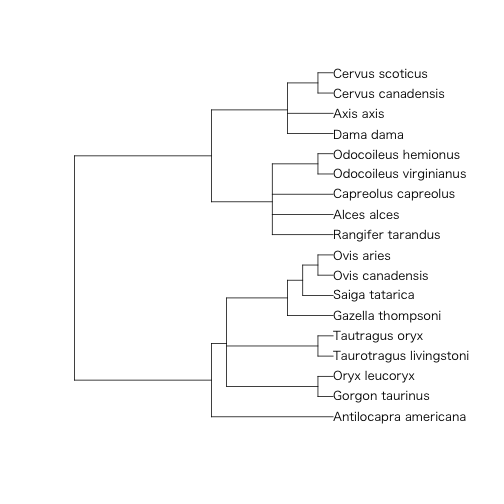

- Introduction
- 1. Development
- 2. Design
- 3. Data-analysis
- 4. Graphics
- 5. Report
- 6. Statistics and Modeling
- 7. Spatial
-
8.
Utility
- 8.1. base
- 8.2. broom
- 8.3. data.table
- 8.4. dplyr
- 8.5. foreach
- 8.6. formula.tools
- 8.7. flora
- 8.8. geojsonio
- 8.9. magrittr
- 8.10. Nippon
- 8.11. packrat
- 8.12. pforeach
- 8.13. readr
- 8.14. readxl
- 8.15. reshape2
- 8.16. rex
- 8.17. Rgitbook
- 8.18. rncl
- 8.19. rlist
- 8.20. statar
- 8.21. stringr
- 8.22. tabplot
- 8.23. taxize
- 8.24. tidyjson
- 8.25. tidyr
- 8.26. utils
- 8.27. WriteXLS
-
9.
Web
- 9.1. httr
- 9.2. rvest
- 9.3. webshot
- 9.4. WikipediR
- Published with GitBook
ape: Analyses of Phylogenetics and Evolution
系統学、進化学の解析ツール
> library(ape)
バージョン: 3.3
| 関数名 | 概略 |
|---|---|
CADM.global |
Congruence among distance matrices |
DNAbin |
Manipulate DNA Sequences in Bit-Level Format |
FastME |
Tree Estimation Based on the Minimum Evolution Algorithm |
Initialize.corPhyl |
Initialize a 'corPhyl' Structure Object |
LTT |
Theoretical Lineage-Through Time Plots |
MPR |
Most Parsimonious Reconstruction |
Moran.I |
Moran's I Autocorrelation Index |
SDM |
Construction of Consensus Distance Matrix With SDM |
ace |
Ancestral Character Estimation |
add.scale.bar |
Add a Scale Bar to a Phylogeny Plot |
additive |
Incomplete Distance Matrix Filling |
alex |
Alignment Explorer With Multiple Devices |
all.equal.phylo |
Global Comparison of two Phylogenies |
ape-package |
Analyses of Phylogenetics and Evolution |
as.alignment |
Conversion Among DNA Sequence Internal Formats |
as.bitsplits |
Split Frequencies and Conversion Among Split Classes |
as.matching |
Conversion Between Phylo and Matching Objects |
as.phylo |
Conversion Among Tree and Network Objects |
as.phylo.formula |
Conversion from Taxonomy Variables to Phylogenetic Trees |
axisPhylo |
Axis on Side of Phylogeny |
balance |
Balance of a Dichotomous Phylogenetic Tree |
base.freq |
Base frequencies from DNA Sequences |
bd.ext |
Extended Version of the Birth-Death Models to Estimate Speciation and Extinction Rates |
bd.time |
Time-Dependent Birth-Death Models |
bind.tree |
Binds Trees |
bionj |
Tree Estimation Based on an Improved Version of the NJ Algorithm |
bird.families |
Phylogeny of the Families of Birds From Sibley and Ahlquist |
bird.orders |
Phylogeny of the Orders of Birds From Sibley and Ahlquist |
birthdeath |
Estimation of Speciation and Extinction Rates With Birth-Death Models |
boot.phylo |
Tree Bipartition and Bootstrapping Phylogenies |
branching.times |
Branching Times of a Phylogenetic Tree |
c.phylo |
Building Lists of Trees |
carnivora |
Carnivora body sizes and life history traits |
cherry |
Number of Cherries and Null Models of Trees chiroptera Bat Phylogeny |
chronoMPL |
Molecular Dating With Mean Path Lengths |
chronopl |
Molecular Dating With Penalized Likelihood |
chronos |
Molecular Dating by Penalised Likelihood and Maximum Likelihood |
clustal |
Multiple Sequence Alignment with External Applications |
coalescent.intervals |
Coalescent Intervals |
collapse.singles |
Collapse Single Nodes |
collapsed.intervals |
Collapsed Coalescent Intervals |
compar.cheverud |
Cheverud's Comparative Method |
compar.gee |
Comparative Analysis with GEEs |
compar.lynch |
Lynch's Comparative Method |
compar.ou |
Ornstein-Uhlenbeck Model for Continuous Characters |
compute.brlen |
Branch Lengths Computation |
compute.brtime |
Compute and Set Branching Times |
consensus |
Concensus Trees |
cophenetic.phylo |
Pairwise Distances from a Phylogenetic Tree |
cophyloplot Plots |
two phylogenetic trees face to face with links between the tips. |
corBlomberg |
Blomberg et al.'s Correlation Structure |
corBrownian |
Brownian Correlation Structure |
corClasses |
Phylogenetic Correlation Structures |
corGrafen |
Grafen's (1989) Correlation Structure |
corMartins |
Martins's (1997) Correlation Structure |
corPagel |
Pagel's "lambda" Correlation Structure |
correlogram.formula |
Phylogenetic Correlogram |
data.nex |
NEXUS Data Example |
dbd |
Probability Density Under Birth-Death Models |
def |
Definition of Vectors for Plotting or Annotating |
del.gaps |
Delete Alignment Gaps in DNA Sequences |
delta.plot |
Delta Plots |
dist.dna |
Pairwise Distances from DNA Sequences |
dist.gene |
Pairwise Distances from Genetic Data |
dist.topo |
Topological Distances Between Two Trees |
diversi.gof |
Tests of Constant Diversification Rates |
diversi.time |
Analysis of Diversification with Survival Models |
diversity.contrast.test |
Diversity Contrast Test |
drop.tip |
Remove Tips in a Phylogenetic Tree |
edges |
Draw Additional Edges on a Plotted Tree |
evonet |
Evolutionary Networks |
ewLasso |
Incomplete distances and edge weights of unrooted topology |
gammaStat |
Gamma-Statistic of Pybus and Harvey |
hivtree |
Phylogenetic Tree of 193 HIV-1 Sequences |
howmanytrees |
Calculate Numbers of Phylogenetic Trees |
identify.phylo |
Graphical Identification of Nodes and Tips |
image.DNAbin |
Plot of DNA Sequence Alignement |
is.binary.tree |
Test for Binary Tree |
is.compatible |
Check Compatibility of Splits |
is.monophyletic |
Is Group Monophyletic |
is.ultrametric |
Test if a Tree is Ultrametric |
kronoviz |
Plot Multiple Chronograms on the Same Scale |
ladderize |
Ladderize a Tree |
landplants |
Gene Tree of 36 Landplant rbcL Sequences |
lmorigin |
Multiple regression through the origin |
ltt.plot |
Lineages Through Time Plot |
makeLabel |
Label Management |
makeNodeLabel |
Makes Node Labels |
mantel.test |
Mantel Test for Similarity of Two Matrices |
mat3 |
Three Matrices |
mat5M3ID |
Five Trees |
mat5Mrand |
Five Independent Trees |
matexpo |
Matrix Exponential |
mcconwaysims.test |
McConway-Sims Test of Homogeneous Diversification |
mcmc.popsize |
Reversible Jump MCMC to Infer Demographic History |
mixedFontLabel |
Mixed Font Labels for Plotting |
mrca |
Find Most Recent Common Ancestors Between Pairs |
mst |
Minimum Spanning Tree |
multi2di |
Collapse and Resolve Multichotomies |
multiphylo |
Manipulating Lists of Trees |
mvr |
Minimum Variance Reduction |
nj |
Neighbor-Joining Tree Estimation |
njs |
Tree Reconstruction from Incomplete Distances |
With |
NJ or bio-NJ |
node.depth |
Depth and Heights of Nodes and Tips |
nodelabels |
Labelling the Nodes, Tips, and Edges of a Tree |
nodepath |
Find Paths of Nodes |
opsin |
Gene Tree of 32 opsin Sequences |
parafit |
Test of host-parasite coevolution |
pcoa |
Principal Coordinate Analysis |
phydataplot |
Tree Annotation |
phymltest |
Fits a Bunch of Models with PhyML |
pic |
Phylogenetically Independent Contrasts |
pic.ortho |
Phylogenetically Independent Orthonormal Contrasts |
plot.correlogram |
Plot a Correlogram |
plot.phylo |
Plot Phylogenies |
plot.varcomp |
Plot Variance Components |
print.phylo |
Compact Display of a Phylogeny |
rTraitCont |
Continuous Character Simulation |
rTraitDisc |
Discrete Character Simulation |
rTraitMult |
Multivariate Character Simulation |
read.GenBank |
Read DNA Sequences from GenBank via Internet |
read.caic |
Read Tree File in CAIC Format |
read.dna |
Read DNA Sequences in a File |
read.nexus |
Read Tree File in Nexus Format |
read.nexus.data |
Read Character Data In NEXUS Format |
read.tree |
Read Tree File in Parenthetic Format |
reconstruct |
Continuous Ancestral Character Estimation |
reorder.phylo |
Internal Reordering of Trees |
richness.yule.test |
Test of Diversification-Shift With the Yule Process |
rlineage |
Tree Simulation Under the Time-Dependent Birth-Death Models |
root |
Roots Phylogenetic Trees |
rotate |
Swapping Sister Clades |
rtree |
Generates Random Trees |
rtt |
Root a Tree by Root-to-Tip Regression |
seg.sites |
Find Segregating Sites in DNA Sequences |
skyline |
Skyline Plot Estimate of Effective Population Size |
skylineplot |
Drawing Skyline Plot Graphs |
slowinskiguyer.test |
Slowinski-Guyer Test of Homogeneous Diversification |
speciesTree |
Species Tree Estimation |
stree |
Generates Systematic Regular Trees |
subtreeplot |
Zoom on a Portion of a Phylogeny by Successive Clicks |
subtrees |
All subtrees of a Phylogenetic Tree |
summary.phylo |
Print Summary of a Phylogeny |
treePop |
Tree Popping |
trex |
Tree Explorer With Multiple Devices |
triangMtd |
Tree Reconstruction Based on the Triangles Method |
unique.multiPhylo |
Revomes Duplicate Trees |
varCompPhylip |
Variance Components with Orthonormal Contrasts |
varcomp |
Compute Variance Component Estimates |
vcv |
Phylogenetic Variance-covariance or Correlation Matrix |
vcv2phylo |
Variance-Covariance Matrix to Tree |
weight.taxo |
Define Similarity Matrix |
where |
Find Patterns in DNA Sequences |
which.edge |
Identifies Edges of a Tree |
woodmouse |
Cytochrome b Gene Sequences of Woodmice |
write.dna |
Write DNA Sequences in a File |
write.nexus |
Write Tree File in Nexus Format |
write.nexus.data |
Write Character Data in NEXUS Format |
write.tree |
Write Tree File in Parenthetic Format |
yule |
Fits the Yule Model to a Phylogenetic Tree |
yule.cov |
Fits the Yule Model With Covariates |
yule.time |
Fits the Time-Dependent Yule Model |
zoom |
Zoom on a Portion of a Phylogeny |
collapse.singles
pic
系統独立対比の実施
> tree.primates <- c("((((Homo:0.21,Pongo:0.21):0.28,","Macaca:0.49):0.13,Ateles:0.62):0.38,Galago:1.00);") %>%
+ read.tree(text = .)
> X <- c(4.09434, 3.61092, 2.37024, 2.02815, -1.46968)
> Y <- c(4.74493, 3.33220, 3.36730, 2.89037, 2.30259)
> names(X) <- names(Y) <- c("Homo", "Pongo", "Macaca", "Ateles", "Galago")
> (pic.X <- pic(X, tree.primates))
6 7 8 9
3.3583189 1.1929263 1.5847416 0.7459333
> (pic.Y <- pic(Y, tree.primates))
6 7 8 9
0.8970604 0.8678969 0.7176125 2.1798897
> cor.test(pic.X, pic.Y)
Pearson's product-moment correlation
data: pic.X and pic.Y
t = -0.8562, df = 2, p-value = 0.4821
alternative hypothesis: true correlation is not equal to 0
95 percent confidence interval:
-0.9874751 0.8823934
sample estimates:
cor
-0.5179156
read.tree
系統樹ファイルの読み込み
> library(adephylo)
Loading required package: ade4
Attaching package: 'adephylo'
The following object is masked from 'package:ade4':
orthogram
> data("ungulates")
> read.tree(text = ungulates$tre) %>% {
+ print(.)
+ plot(.)
+ }
Phylogenetic tree with 18 tips and 13 internal nodes.
Tip labels:
Antilocapra_americana, Gorgon_taurinus, Oryx_leucoryx, Taurotragus_livingstoni, Tautragus_oryx, Gazella_thompsoni, ...
Node labels:
Root, W11, W10, W1, W2, W7, ...
Rooted; no branch lengths.

rtree
ランダムな系統樹データを生成
rtree, rcoal, rmtree
Arguments
- n
- rooted
- tip.label
- br
- ...
- N
> rtree(n = 20)
Phylogenetic tree with 20 tips and 19 internal nodes.
Tip labels:
t18, t9, t10, t8, t16, t6, ...
Rooted; includes branch lengths.
write.tree
Newickファイルの書き出し
> set.seed(100)
> rtree(n = 20) %>%
+ write.tree(phy = ., file = "../inst/ape_write_tree.tre")
>
> read.tree(file = "../inst/ape_write_tree.tre") %>% {
+ print(.)
+ is.binary.tree(.)
+ }
Phylogenetic tree with 20 tips and 19 internal nodes.
Tip labels:
t6, t8, t14, t12, t4, t20, ...
Rooted; includes branch lengths.
[1] TRUE